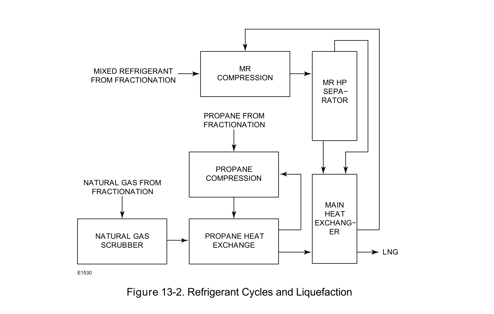

Cryogenic Constraint Application

The refrigerant cycle itself is a control-valve-relevant process — the cycle's own valve duty points exist because of how the refrigeration stages are staged, not incidental to it.
Fisher Control Valve Sourcebook — Oil & Gas (© 2013 Fisher), Chapter 13 "LNG Liquefaction," Figure 13-2 (drawing number E1530, printed p. 13-2) — "Figure 13-2. Refrigerant Cycles and Liquefaction." — used directly. Component Index: ogas-cmp-refrigerant-cycles-liquefaction-diagram.